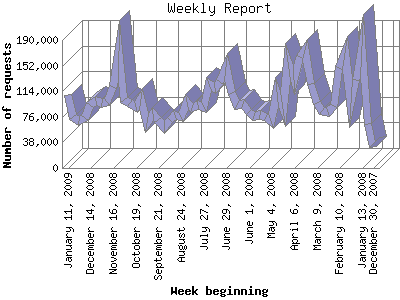

The Weekly Report identifies the activity for each week within the report
time frame. Remember that one page hit can result in several server requests
as the images for each page are loaded.
Note: Depending on the
report time frame for this report the first and last week may not represent
a full seven day week, resulting in lower hits.

| Week beginning | Number of requests | Number of page requests | |
|---|---|---|---|
| 1. | December 30, 2007 | 31,329 | 260 |
| 2. | January 6, 2008 | 65,055 | 540 |
| 3. | January 13, 2008 | 180,407 | 1,342 |
| 4. | January 20, 2008 | 130,956 | 996 |
| 5. | January 27, 2008 | 96,319 | 803 |
| 6. | February 3, 2008 | 170,121 | 1,274 |
| 7. | February 10, 2008 | 148,959 | 1,122 |
| 8. | February 17, 2008 | 91,538 | 817 |
| 9. | February 24, 2008 | 83,859 | 677 |
| 10. | March 2, 2008 | 83,937 | 653 |
| 11. | March 9, 2008 | 95,869 | 759 |
| 12. | March 16, 2008 | 124,565 | 1,012 |
| 13. | March 23, 2008 | 174,415 | 1,391 |
| 14. | March 30, 2008 | 165,462 | 1,309 |
| 15. | April 6, 2008 | 130,493 | 920 |
| 16. | April 13, 2008 | 158,058 | 1,234 |
| 17. | April 20, 2008 | 87,754 | 741 |
| 18. | April 27, 2008 | 112,579 | 794 |
| 19. | May 4, 2008 | 69,569 | 620 |
| 20. | May 11, 2008 | 75,492 | 654 |
| 21. | May 18, 2008 | 78,468 | 737 |
| 22. | May 25, 2008 | 76,574 | 628 |
| 23. | June 1, 2008 | 83,323 | 770 |
| 24. | June 8, 2008 | 94,495 | 862 |
| 25. | June 15, 2008 | 93,507 | 803 |
| 26. | June 22, 2008 | 111,152 | 907 |
| 27. | June 29, 2008 | 149,275 | 1,108 |
| 28. | July 6, 2008 | 128,298 | 1,046 |
| 29. | July 13, 2008 | 118,476 | 1,024 |
| 30. | July 20, 2008 | 124,708 | 1,091 |
| 31. | July 27, 2008 | 91,035 | 819 |
| 32. | August 3, 2008 | 92,984 | 859 |
| 33. | August 10, 2008 | 89,257 | 802 |
| 34. | August 17, 2008 | 97,370 | 830 |
| 35. | August 24, 2008 | 75,146 | 660 |
| 36. | August 31, 2008 | 78,967 | 679 |
| 37. | September 7, 2008 | 71,374 | 594 |
| 38. | September 14, 2008 | 60,198 | 539 |
| 39. | September 21, 2008 | 71,772 | 623 |
| 40. | September 28, 2008 | 80,426 | 680 |
| 41. | October 5, 2008 | 66,903 | 873 |
| 42. | October 12, 2008 | 103,040 | 1,119 |
| 43. | October 19, 2008 | 91,189 | 748 |
| 44. | October 26, 2008 | 96,179 | 768 |
| 45. | November 2, 2008 | 100,944 | 882 |
| 46. | November 9, 2008 | 173,520 | 1,356 |
| 47. | November 16, 2008 | 119,586 | 944 |
| 48. | November 23, 2008 | 97,692 | 852 |
| 49. | November 30, 2008 | 97,138 | 867 |
| 50. | December 7, 2008 | 99,727 | 873 |
| 51. | December 14, 2008 | 93,806 | 806 |
| 52. | December 21, 2008 | 73,981 | 651 |
| 53. | December 28, 2008 | 70,315 | 725 |
| 54. | January 4, 2009 | 75,826 | 673 |
| 55. | January 11, 2009 | 108,226 | 687 |
Most active week beginning March 23, 2008 : 1,391 pages sent. 180,407 requests handled.
Weekly average: 850 pages sent. 102,029 requests handled.
This report was generated on January 17, 2009 11:54.
Report time frame January 3, 2008 00:50 to January 16, 2009 23:34.
| Web statistics report produced by: analog 6.0 / Report Magic 2.21 |